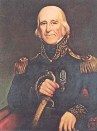

by
Stefan Bielinski
Morgan Lewis was born in New York City in 1754. He was the son of Welshman and Declaration of Independence signer Francis Lewis and his wife, Elizabeth Annesley. He graduated from the College of New Jersey in 1773 and intended to study for the ministry. However, he followed his father's advice and prepared for a legal career.
After serving in the militia, he joined the Continental army - serving throughout the war in the Quartermaster's Department. During that time he was stationed in Albany where he employed a number of clerks, assistants, and other field personnel. Many Albany men and boys served under his comand.
While in Albany, he boarded at the riverside home of James Bloodgood. In 1779, the tax list showed him living there with personal property valued at $2,000 - one of the highest assessments in the city. Later, he qualified for a "bounty right" as a member of the city regiment of the Albany County Militia. During that time, he acquired some Albany property. But in 1788, his lot was taken back by the city government for failure to pay back rents.
Lewis married Gertrude Livingston in 1779. After the war, they lived in Rhinebeck and then in Hyde Park. In 1790, his Rhinebeck household was served by eight slaves.
He was a member of the New York State Assembly (1789-92); Attorney General (1791-92); justice and chief justice of the New York State Supreme Court (1792-1801). He later served in the New York State Senate.
He was governor of New York from 1804-1807 and maintained an Albany residence during that time.
During the War of 1812, he served as Quartermaster General of the American army.
At different times, while he was in Albany, he called on fellow Masons at their lodge.
Morgan Lewis died in New York City in 1844. Lewis County is named for him!
notes
 Sources: The life of Morgan Lewis is CAP biography
number 3898. This profile is derived chiefly from family
and community-based resources.
Sources: The life of Morgan Lewis is CAP biography
number 3898. This profile is derived chiefly from family
and community-based resources.
Portrait: Reproduced in Portraits of the Governors of New York State. Thanks to Tricia Barbagallo for particular research on this subject.
first posted: 7/30/02; last revised 3/17/10